India, a land of vibrant diversity and rich cultural heritage, captivates the senses with its landscapes, and flavors. From the majestic peaks of the Himalayas to the serene backwaters of Kerala, kaleidoscope of traditions, India's geography is as diverse as its people. With a history spanning millennia, India has been a crucible of civilizations, fostering the growth of religions, philosophies, and artistic expressions. Its bustling cities pulse with energy, juxtaposing ancient temples with modern skyscrapers, while rural villages offer a glippse into traditional ways of life. The aroma of spices fills the air, tantalizing taste buds with the culinary delights of regional cuisines. Despite its challenges, India's spirit remains resilient, infused with optimism and a determination to forge ahead on the path of progress. India's story is one of contrasts and complexities, woven together into a tapestry that continues to inspire and intrigue the world.
| 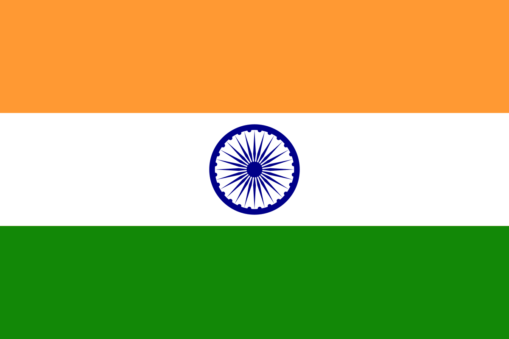 | 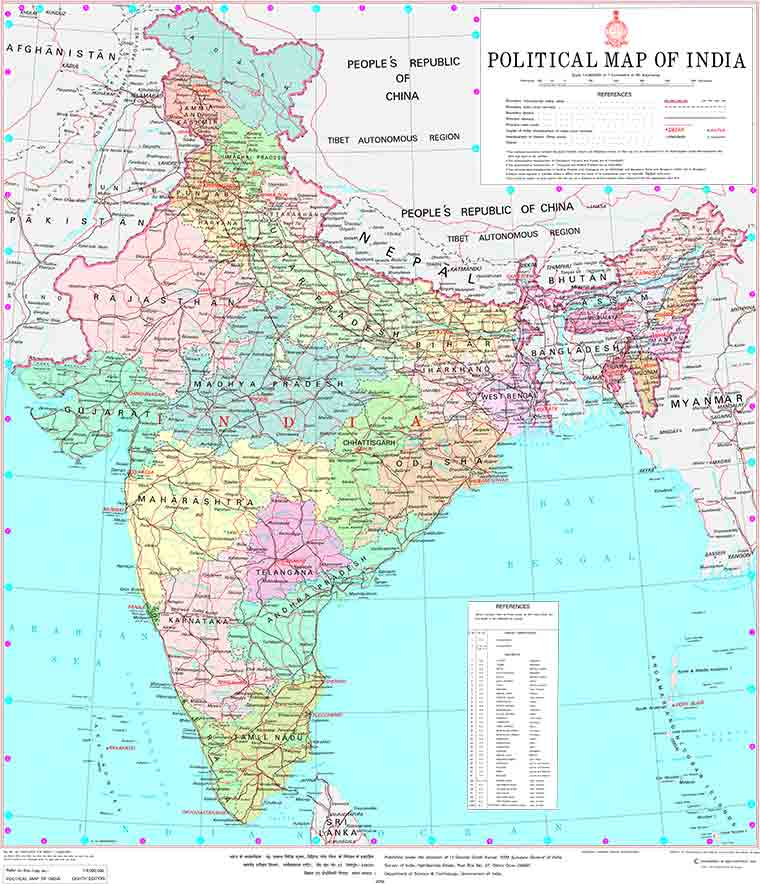 |
|
India Flag |
Indian Map |
Indian freedom fighters, a diverse array of individuals spanning different ideologies, backgrounds, and regions, collectively formed the backbone of India's struggle for independence against British colonial Mahatma Gandhi, often referred to as the "Father of the Nation," spearheaded the nonviolent civil disobedience movement, emphasizing the principles of truth and nonviolence to mobilize millions in the fight for freedom. His leadership, marked by acts of peaceful resistance like the Salt March and Quit India Movement, galvanized the nation and garnered international attention, ultimately leading to India's liberation in 1947. Alongside Gandhi stood towering figures like Jawaharlal Nehru, whose eloquent advocacy for socialism and secularism shaped the vision of a modern, democratic India. The fiery rhetoric and militant tactics of leaders like Subhas Chandra Bose, who formed the Indian National Army (INA) and allied with Axis powers during World War II, offered an alternative, more confrontational approach to liberation. Women such as Sarojini Naidu, Annie Besant, and Kamaladevi Chattopadhyay played pivotal roles in the freedom movement, challenging gender norms and contributing significantly to the struggle through activism, leadership, and intellectual prowess. The sacrifices of Bhagat Singh , Chandrasekhar Azad, and countless others who laid down their lives for the cause of independence remain etched in the collective memory of the nation. Their collective efforts, marked by resilience, unity, and sacrifice, serve as a beacon of inspiration for future generations, reminding us of the power of ordinary individuals to bring about extraordinary change. Today, their legacy endures as a testament to the enduring spirit of freedom and democracy in India.
| 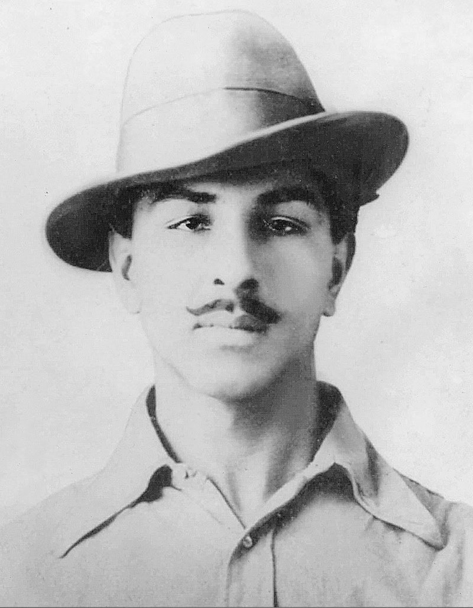 | 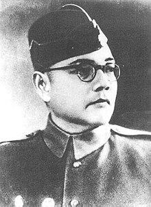 |
|
|
| Bhagat Singh | Netaji Subhash Chandra Bose | Mahatma Gandhi | Maharani Lakshmibai |
| Bhagat Singh, a prominent figure in India's independence movement, was a fearless revolutionary who sacrificed his life for the nation's freedom. Through his bold actions and unwavering commitment to the cause, Singh inspired countless others and continues to be revered as a symbol of courage and patriotism.Bhagat Singh, a prominent figure in India's independence movement, was a fearless revolutionary who sacrificed his life for the nation's freedom. | Netaji Subhash Chandra Bose was a prominent leader in India's fight for independence against British rule. Born on January 23, 1897, he led the Indian National Army (INA) during World War II, rallying Indians with his famous slogan "Give me blood, and I shall give you freedom." Despite his untimely death in 1945, Bose's legacy remains a symbol of courage and determination in the pursuit of freedom. | Mahatma Gandhi, born on October 2, 1869, was a key leader in India's struggle for independence against British rule. He championed nonviolent resistance and civil disobedience, inspiring millions with his philosophy of truth and nonviolence. Gandhi's efforts led to India's independence in 1947, earning him the title "Father of the Nation." Despite his assassination in 1948, his legacy endures as a symbol of peaceful activism and social change worldwide. | Maharani Lakshmibai, also known as the Rani of Jhansi, was a courageous queen and key figure in India's fight for independence in the 19th century. Known for her bravery and leadership, she led her troops in battle against British forces during the Indian Rebellion of 1857. Despite her efforts, she was martyred in combat, but her legacy as a symbol of courage and resistance against colonial rule lives on in India's history. |
Indian politicians form a dynamic and diverse landscape, reflecting the country's rich tapestry of cultures, languages, and ideologies. From towering figures like Jawaharlal Nehru and Indira Gandhi, who shaped India's post-independence trajectory, to contemporary leaders like Narendra Modi and Rahul Gandhi, who represent contrasting visions for the nation's future, Indian politics encompasses a wide spectrum of beliefs and agendas. The political arena is characterized by intense competition, intricate coalition-building, and a complex interplay of regional and national interests. Alongside prominent figures from national parties such as the Indian National Congress and the Bharatiya Janata Party (BJP), regional leaders wield significant influence, championing causes specific to their states and communities. Women politicians like Mamata Banerjee, Mayawati, and Nirmala Sitharaman have broken barriers and risen to prominence, challenging traditional gender roles in politics. Despite facing challenges such as corruption, casteism, and communalism, Indian politicians navigate a vibrant democracy, engaging in spirited debates, grassroots activism, and electoral campaigns to shape the nation's trajectory. Whether at the helm of national affairs or grassroots movements, Indian politicians play a crucial role in steering the world's largest democracy towards progress, development, and social justice.

|
|
|
|
| Narendra Modi | Yogi Adityanath | Gopinath Munde | Indiara Gandhi |
| Narendra Modi, India's 14th Prime Minister, is renowned for his dynamic leadership and ambitious vision for the nation. Born in Gujarat in 1950, Modi's tenure has been marked by a focus on economic growth, infrastructure development, and social welfare programs. Despite facing criticism, his initiatives like "Make in India" and "Swachh Bharat Abhiyan" have garnered praise for their impact. Modi's influence on Indian politics and his efforts to modernize the country continue to shape its trajectory. | Yogi Adityanath, the Chief Minister of Uttar Pradesh, is a prominent figure in Indian politics known for his strong Hindu nationalist stance. He has been instrumental in implementing policies aimed at bolstering law and order and promoting economic development in the state. Adityanath's leadership style often sparks debate, with critics accusing him of fostering religious polarization. Nevertheless, he commands significant influence, particularly in Uttar Pradesh's political landscape. | Gopinath Munde, a respected Indian politician, was known for his significant contributions to Maharashtra's political landscape. Born on December 12, 1949, Munde rose through the ranks of the Bharatiya Janata Party (BJP) to become a prominent leader. His tenure saw him serve in various ministerial positions at both state and national levels, focusing on rural development, agriculture, and social justice. Tragically, his untimely demise in a car accident in June 2014 shocked the nation, marking the end of a distinguished political career and leaving behind a legacy of dedicated public service. | Indira Gandhi, one of India's most iconic political figures, served as the country's Prime Minister from 1966 to 1977 and again from 1980 until her assassination in 1984. Born on November 19, 1917, she was the daughter of India's first Prime Minister, Jawaharlal Nehru. Gandhi's leadership was marked by her strong-willed and decisive nature, as well as her commitment to India's development and independence. She implemented significant social and economic reforms, including the nationalization of banks and the Green Revolution, which transformed India's agricultural sector. |
Indian sports persons have made significant strides on both national and international platforms, showcasing exceptional talent and determination across various disciplines. From cricket, which reigns supreme as the nation's favorite sport, to emerging fields like badminton, wrestling, and athletics, Indian athletes have continuously broken barriers and achieved remarkable success. Icons like Sachin Tendulkar, Virat Kohli, and M.S. Dhoni have captivated millions with their cricketing prowess, elevating India's status in the global sporting arena. Additionally, athletes like P.V. Sindhu, Saina Nehwal, and Mary Kom have brought glory to the nation in individual sports, winning medals at prestigious events like the Olympics, Commonwealth Games, and Asian Games. Rising stars such as Neeraj Chopra in javelin throw and Mirabai Chanu in weightlifting exemplify the country's potential to excel in diverse sporting disciplines. Despite facing challenges such as inadequate infrastructure, limited resources, and societal pressures, Indian sports persons continue to inspire generations with their passion, dedication, and resilience, paving the way for a brighter future in sports on the global stage.
| 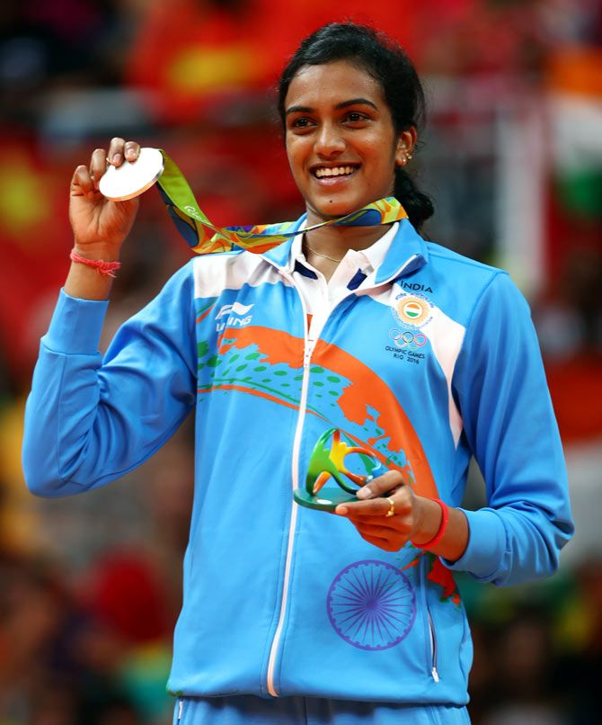 |

|

|
|
| P.V.Sindhu | Rohit Sharma | Sunil Chhetri | Neeraj Chopra |
| Pusarla Venkata Sindhu, commonly known as PV Sindhu, is an accomplished Indian badminton player who has made significant strides in the sport on both national and international levels. Born on July 5, 1995, in Hyderabad, India, Sindhu has emerged as one of the world's leading female badminton players. She shot to fame when she won the silver medal at the 2016 Rio Olympics, becoming the first Indian woman to achieve such a feat in badminton. Sindhu's remarkable talent, athleticism, and determination have earned her numerous accolades, including multiple medals at the World Championships and Commonwealth Games. | Rohit Sharma, the elegant maestro of cricket, epitomizes grace and power with every stroke of his bat. His effortless style and remarkable timing have captivated cricketing fans around the globe. With a penchant for breaking records and rewriting history, Rohit's name is etched in the annals of the sport. Whether he's crafting majestic centuries or leading his team with astute captaincy, Rohit Sharma stands as a beacon of excellence in the cricketing world, earning admiration and respect from peers and enthusiasts alike. | Sunil Chhetri, a footballing virtuoso revered both nationally and internationally, possesses a rare blend of skill, determination, and leadership. With each match, he exemplifies the essence of commitment and passion, inspiring teammates and fans alike. A prolific goal-scorer and an astute strategist on the field, Chhetri's influence extends beyond the pitch, as he serves as a role model for aspiring footballers across India. His unwavering dedication to the sport and his country has earned him accolades and admiration, solidifying his status as a legend in Indian football history. | Neeraj Chopra, the pride of Indian athletics, stands tall as a symbol of determination and excellence in javelin throwing. With each powerful throw, he showcases not only his remarkable physical prowess but also his unwavering focus and dedication to his craft. Neeraj's journey from humble beginnings to the pinnacle of his sport is a testament to his resilience and hard work. As an Olympic gold medalist and multiple-time record-breaker, he has etched his name in the annals of Indian sports history. Beyond his athletic achievements, Neeraj's humility and down-to-earth nature have endeared him to fans across the nation, inspiring a new generation of athletes to dream big and strive for greatness. |
Indian dance forms are a vibrant and diverse reflection of the country's rich cultural heritage and traditions. From classical to folk, each dance style carries its own unique narrative, movements, and symbolism. Classical dances like Bharatanatyam, Kathak, Odissi, Kuchipudi, Manipuri, and Kathakali are deeply rooted in ancient scriptures, mythology, and classical music, characterized by intricate footwork, graceful expressions, and elaborate costumes. These forms serve not only as a means of artistic expression but also as a medium for storytelling, spirituality, and cultural preservation. Alongside classical dances, India boasts a myriad of folk and tribal dance traditions, each representing the distinct cultural identity of its region. From the energetic Bhangra of Punjab to the graceful Garba of Gujarat, and from the vibrant Dandiya Raas of Rajasthan to the rhythmic Lavani of Maharashtra, folk dances celebrate the joyous occasions, rituals, and everyday life of the people. Through their mesmerizing performances, Indian dancers uphold centuries-old traditions, foster intercultural understanding, and continue to captivate audiences around the world with their beauty, grace, and diversity.
| 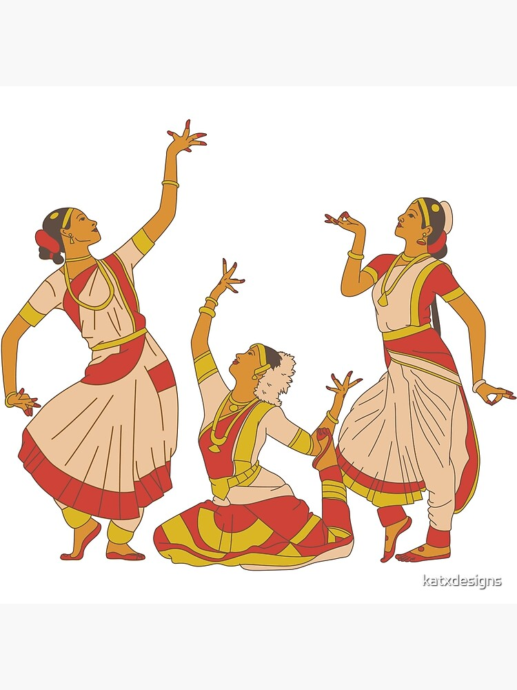 | 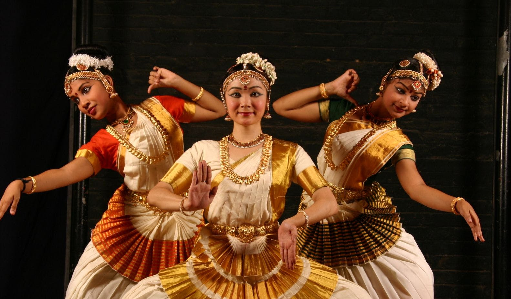 |

|

|
| Bharatanatyam | Mohiniyattam | Kathak | Kathakali |
Indian businessmen have played a pivotal role in shaping the country's economy and global business landscape. From visionary entrepreneurs who founded some of the world's most successful companies to innovative leaders who have spearheaded advancements in technology, manufacturing, and finance, Indian businesspersons exemplify ingenuity, resilience, and ambition. Icons like Ratan Tata, Mukesh Ambani, and Azim Premji have not only built vast business empires but have also contributed significantly to social welfare, education, and philanthropy. The entrepreneurial spirit is deeply ingrained in Indian culture, driving a thriving startup ecosystem that fosters innovation and creativity across sectors ranging from e-commerce and fintech to biotechnology and renewable energy. Despite challenges such as regulatory hurdles, infrastructure deficits, and global competition, Indian businessmen continue to demonstrate adaptability and agility, seizing opportunities for growth and development both domestically and on the international stage. Through their leadership, investment, and innovation, Indian businesspersons continue to be key drivers of economic progress, job creation, and societal transformation.
| 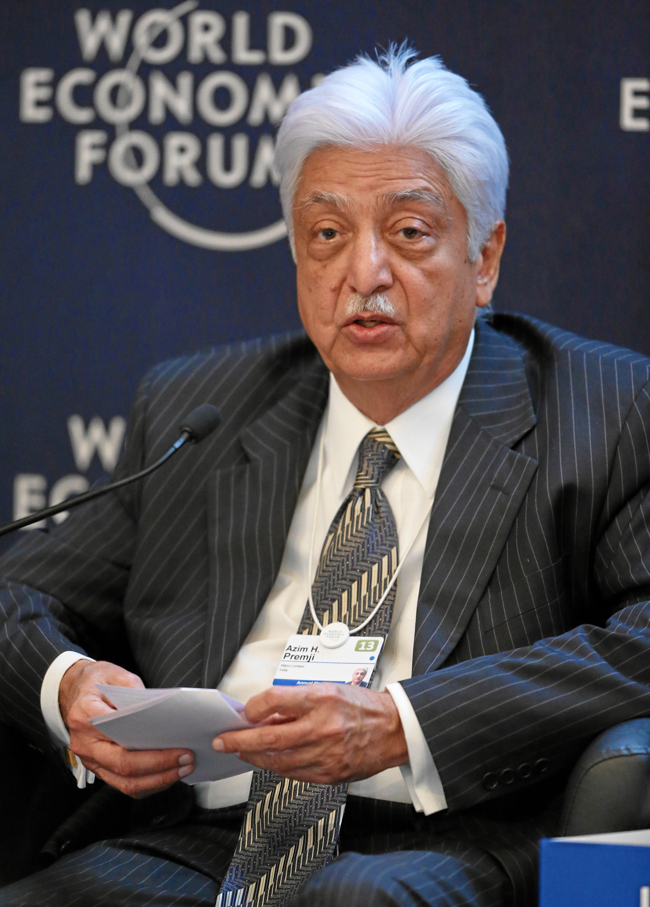 | 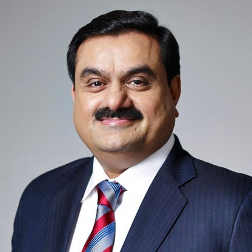 | 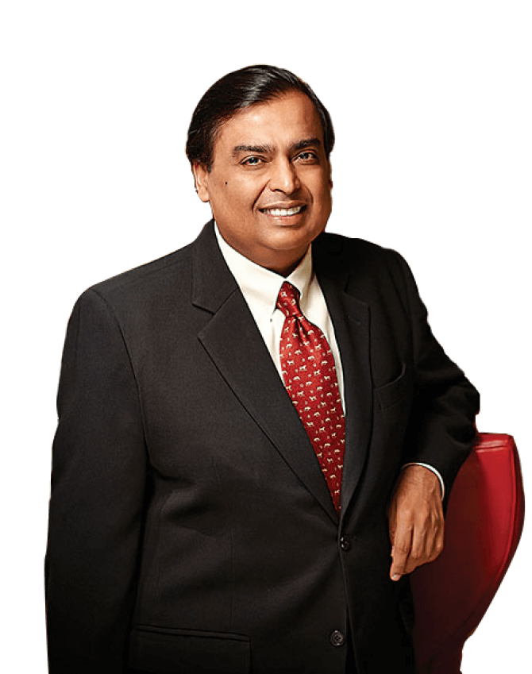 | 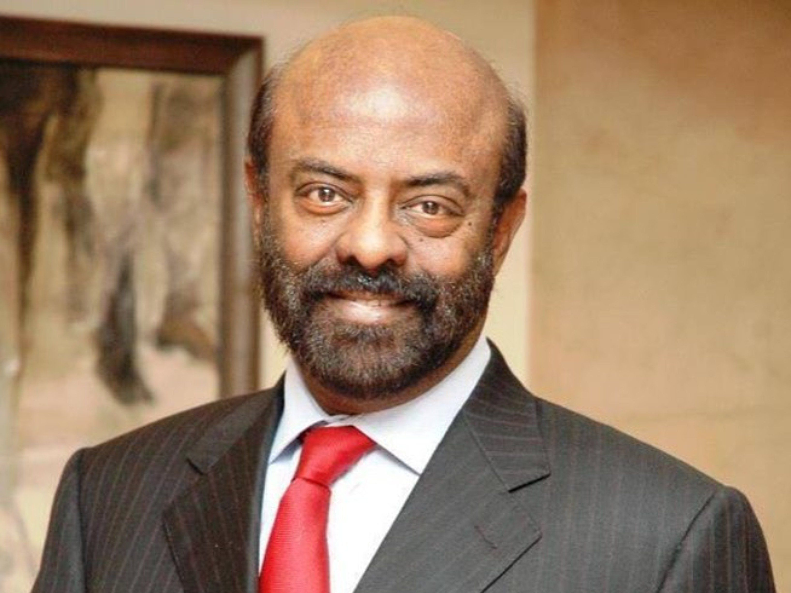 |
| Azim Premji | Gautam Adani | Mukesh Ambani | Shiv Nadar |